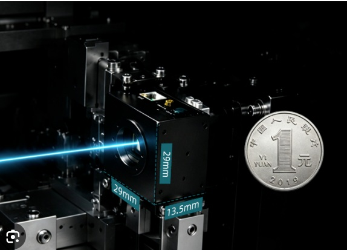

厳選ニュース / 活用トピックス
01.【半導体基板】 東大・AGC：ガラス微細穴あけを「従来比100万倍」高速化 (2025年6月12日)
東京大学大学院工学系研究科とAGCは、レーザーの時間・空間波形制御により、わずか20µsで直径3µm・深さ1mmの高アスペクト比貫通孔を形成する超高速ガラス加工技術を開発しました。従来のフェムト秒レーザー加工と比べ約4桁低いレーザー出力での加工が可能です。
なぜ重要か：
- 次世代ガラスインターポーザーの実用化： 熱膨張が少なく平坦性に優れる半導体向けガラス基板の量産スループットを劇的に引き上げ、低出力化による装置コスト・消費電力の削減も同時に実現します。
- クラックフリーの超微細加工： 熱影響を極限まで抑える波形制御により、ガラスのほかサファイア、炭化ケイ素（SiC）、ダイヤモンドといった脆性・難削材料の破損リスクを排除した精密穴あけを可能にします。
02.【EV・電池】 京大・スタンレー電気：青色GaNレーザーで高反射金属を安定溶接 (2022年11月4日)
京都大学大学院工学研究科とスタンレー電気は、窒化ガリウム（GaN）系フォトニック結晶レーザーにおいてデバイス層構造の最適設計や二重格子構造の導入を行い、ワット級の高出力とビーム拡がり角約0.2°という極めて高いビーム品質の同時達成に成功しました。
なぜ重要か：
- 銅溶接の「スパッター・不良」を低減： 赤外レーザーに比べ純銅への光吸収率が高い青色波長（400nm帯）と狭拡がり角の高ビーム品質を組み合わせることで、高反射・高熱伝導な銅部材を低スパッター・高精細に接合できます。
- EVモーター・バッテリーの歩留まり向上： 電気自動車の重要部品であるバスバーや厚膜銅箔、ヘアピンコイルの溶接品質を安定化させ、大型光学系に頼らないコンパクトな加工ヘッド構成に貢献します。
03.【現場保全】 古河電工：インフラ老朽化対策に向けた「インフラレーザ®」小型可搬システムを製品化 (2025年5月13日)
古河電気工業は、橋梁・鉄道・船舶・プラント等の塗膜や錆を除去する表面処理ソリューション「インフラレーザ®」シリーズにおいて、空冷式冷却を採用して本体重量を従来機の約1/5となる55kgへ軽量化しつつ、光出力を1,000Wへ高出力化し施工速度を約1.5倍に高めた小型可搬システムを製品化しました。
なぜ重要か：
- 粉じん・産廃を激減させる環境対応： 従来のブラスト工法（研削材投射）のような大量の産業廃棄物や粉じんを発生させず、母材を傷めずに1種ケレン相当の下地処理が可能です。
- 高所・狭小現場の省力化： 空冷化と55kgへの軽量・可搬化により、従来は大型装置の搬入が難しかったインフラ補修現場や狭小エリアへ容易に持ち込み、作業効率を大幅に向上させます。
04.【高効率化】 LCOS-SLMホログラフィック多点加工と超小型レーザーマーカーのライン組み込み加速 (2026年6月26日 / 9月11日)
株式会社光響は、液晶型空間光変調器（LCOS-SLM）による波面制御でビーム分岐や収差補正を行うホログラフィックフェムト秒レーザー加工機「Femto-pro-HGS」の技術資料を公開したほか、体積を従来比約22%削減した超小型ファイバーレーザーマーカー「LMS-IR30B」を発売しました。浜松ホトニクスによる700W高耐光LCOS-SLMの展開とあわせ、空間光変調器と小型加工機の現場実装が進んでいます。
なぜ重要か：
- 並列多点加工による圧倒的タクト短縮： LCOS-SLMの計算機ホログラム（CGH）制御により1本のレーザービームを複数焦点へ自在に分岐・成形でき、透明材料の内部3次元加工や微細穴あけの同時一括処理を可能にします。
- 省スペース装置によるインライン実装・内製化の加速： 加工ヘッドの大幅な小型化・低コスト化により、既存生産ラインへの後付け組み込みや自社内での試作・トレーサビリティ印字の内製化を強力に支援します。
ピックアップ製品・ソリューション
Tucsen「XTシリーズ」レーザービームアナライザー
UV(240nm)からLWIR(14µm)まで対応。加工不良を未然に防ぐ超小型ビームプロファイラー

なぜ重要か：
- 加工品質のバラつきを「見える化」して未然防止： ガラス微細穴あけの波形制御や青色銅溶接の歩留まり低下を招く集光径の広がり・光軸ズレ（M2値悪化）をリアルタイム計測し、溶接不良や微細穴のバリ・クラック発生を確実に防止します。
現場課題への解決アプローチ：
- 測定誤差 ±2%未満の高精度・定量解析： 曖昧な感覚値に頼らず、ビーム径・形状（ガウシアン/トップハット・SLM多点分岐プロファイル）・中心位置・拡がり角をISO規格に準拠して数値管理します。
- UVからLWIRまで全波長網羅： 紫外（240nm）の半導体微細加工から、青色GaNレーザー（400nm帯）、近赤外ファイバーレーザー、CO2レーザー（14µm）まで多彩な加工波長に1シリーズで対応します。
- 29mm角の超小型筐体で装置組み込みが容易： 狭い加工機内部や超小型マーカー・ロボットヘッド先端にも組み込み可能で、日常点検やインライン品質保証を自動化します。
| メーカー / シリーズ |
Tucsen Photonics / XTシリーズ レーザービームアナライザー |
| 対応波長範囲 |
240nm (UV) 〜 14µm (LWIR) ※センサーモデルによる |
| ビーム幅測定精度 |
±2% 未満（高精度定量解析対応） |
| センサータイプ |
高ダイナミックレンジCMOS / マイクロボロメータ（赤外線対応） |
| 外形寸法 / 機構 |
最小 29 × 29 mm 超小型設計（加工装置へのインライン組込対応） |
| インターフェース / 制御 |
USB3.0 高速転送 / 専用解析ソフトウェア・SDK完備 |